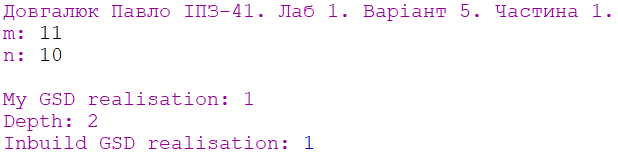
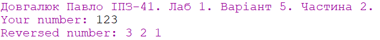

Завдання:

Тема: Використання рекурсії для організації повторювальних процесів.
Мета: Сформувати декларативне мислення в галузі програмування завдяки використанню чистих функцій, рекурсій замість циклів, запобіганню даних, що змінюються. Опанувати застосування рекурсивних функцій для обчислювальних процесів
Результати роботи:
Частина 1

Частина 2

Файли програм: